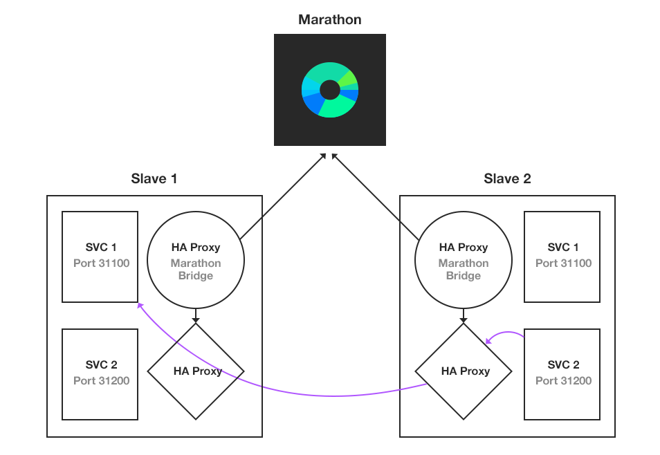

Innovating Democracy with Java EE and Open Source
My experience in several projects
@alexsotob - lordofthejars.com
Different elements Tech and not Tech
Only Services
JAX-RS
JSON-P
Bean Validation
EJB
JPA
CDI
AngularJS, Materials ... + JSON
Application Server
Open source for transparency
It is a
Tomcat IDE, IT who deploys happy
It is
Certified Portable and knowldgable, and tested
Dependencies
dependencies {
providedCompile group: 'javax', name: 'javaee-api', version:'7.0'
}Provided implementation is on server side
JAX-RS
@Singleton
@Path("/color")
public class ColorService {
@Path("{color}")
@POST
@Consumes({APPLICATION_JSON})
public void addColor(
@PathParam("color") @Size(min = 2, max = 4) String nameColor,
@Valid Color color) {
//...
}
}EJB (sec, trans, conc) Bean Validation
JPA
@Singleton
@Path("/color")
public class ColorService {
@PersistenceContext
EntityManager entityManager;
//....
}
CDI
@Singleton
@Path("/color")
public class ColorService {
@Inject
@SHA1Digest
MessageDigest digester;
//....
}
CDI
// Spain SMS JAR
public void sendSMS(@Observes @SMS NotificationEvent event) {
}
// US SMS JAR
public void sendSMS(@Observes @SMS NotificationEvent event) {
}
//Logic
@Inject
@SMS
Event<NotificationEvent> smsEvent;
smsEvent.fire(new NotificationEvent());
Configuration
— of —
Resources
Resource Configuration
conf/tomee.xml — WEB-INF/resources.xml
<tomee>
<Resource id=”myds” type=”DataSource”>
JdbcDriver = org.hsqldb.jdbc.JDBCDriver
JdbcUrl = jdbc:hsqldb:mem:my-datasource
Username = SA
Password =
minEvictableIdleTime = 30 minutes
</Resource>
<Container id=”stateless-container” type=”STATELESS”>
PoolSize = 50
StrictPooling = true
</Container>
</tomee>Classpath (resources tag) or global (tomee tag), Readable (time), Work with defaults (HSQLDB)
Placeholders
<tomee>
<Resource id=”myds” type=”DataSource”>
JdbcUrl = ${DB_URL:-jdbc:hsqldb:mem:}movies
</Resource>
</tomee>
export DB_URL=jdbc:mysql://localhost/Defaults + system environment - Idea in Docker ENV + Partial things
System Properties
<tomee>
<Resource id=”myds” type=”DataSource”>
JdbcUrl = jdbc:hsqldb:mem:movies
</Resource>
</tomee>
-Dmyds.JdbcUrl=jdbc:mysql://localhost/
Custom Resources
<tomee>
<Resource id="mongoClient" class-name="com.mongodb.MongoClient">
host localhost
</Resource>
</tomee>@Resource(name = "mongoClient")
private MongoClient mongoClient;ActiveMQResourceAdapter,javax.jms.ConnectionFactory,javax.mail.Session
Custom Resources
<Resource id="..." properties-provider="org.superbiz.RedisProvider">
host localhost
</Resource>public class RedisProvider {
private Properties properties;
public void setProperties(final Properties p) {
this.p = p;
}
public Properties provides() {
Jedis jedis = new Jedis(this.p.get("host");
return fillOrAppendProperties(jedis);
}
}configuration common to several services, central point of getting algorithms SHA-1
Password Cipher
<Resource id=”myds” type=”DataSource”>
//.....
Password = xMH5uM1V9vQzVUv5LG7YLA==
PasswordCipher = Static3DES
</Resource><Resource id=”myresource” class-name="org.superbiz.VaultGateway">
//.....
VaultPassword = cipher:Static3DES:xMH5uM1V9vQzVUv5LG7YLA==
</Resource>
Password Cipher
public static class SymmetricEncryption implements PasswordCipher {
@Override public char[] encrypt(String plainPassword) {
}
@Override public String decrypt(char[] encryptedPassword) {
}
}META-INF/org.apache.openejb.cipher.PasswordCipher/<PasswordCipher> VaultPassword = cipher:<PasswordCipher>:xMH5uM1V9vQzVUv5LG7YLA==
REST APIs
— are —
Stateless Each communication contains all u need
Java EE
— and —
Security Http Session old times, web desc, java ee, Shiro Spring Sec
Perils of cookies
CSRF (bank.com/transfer.do?acct=MARIA&amount=1000)
XSS like SQL Injection, CSRF Malicious system acts on behalf of real user
HTTP Session and REST APIs
Opaque
Microservices roundtrip
Stateful
No Scalable
TOKENS Travels everytime to server
JWT
(jot)
JSON Web Token
Part of JOSE RFC 7519, we are not google
What is JWT ?
URL safe-token
HTTP header or URL parameter
Claims are JSON
Enable claims digitally signed, MACed or encrypted
JWT
//Header
Base64({
"type": "JWT", "alg": "HS256"
}).
//Claims
Base64({
"iss": "example.com", "sub": "alex",
"exp": 1416891754, "roles": ["ADMIN", "USER"]
}).
sign(header+.+claims)
Write Unit Tests
Write Unit test as usually, small group classes related, and forget about annotations, use Mocks
JUnit
@Singleton
@Path("/color")
public class ColorService {
@PersistenceContext
EntityManager entityManager;
@POST
public void addColor(...) {}
@GET
public Color getColor(...){}
}
@Test
public void addAndGetColor() {
EntityManager em = mock(EntityManager.class);
//...
ColorService colorService = new ColorService();
colorService.entityManager = em;
colorService.addColor("green");
assertThat(colorService.getColor(), is("green"));
}
Avoid Schrödinger’s Code
Code that has been written, but not tested, and is in a state of neither working nor failing until it is observed
Woult it Work in Production ?
Entity Manager configuration
Transactions
CDI Qualifiers
CDI Events
JAX-RS
HTTP Servlet Filters
We don't know until deployed on an AS. Manually?
Steps of Arquillian
Choose Application Server
Start Application Server
(micro)Package the Application
Run Tests (In Container or As Client)
Stop Application Server
Arquillian Test
dependencyManagement {
imports {
mavenBom
'org.arquillian:arquillian-universe:1.0.0.Alpha1'
}
}
testCompile group: 'org.arquillian.universe',
name: 'arquillian-junit',
ext: 'pom'
testCompile group: 'org.apache.openejb',
name: 'arquillian-tomee-embedded',
version:'1.7.2'
testCompile group: 'org.apache.openejb',
name: 'tomee-jaxrs',
version:'1.7.2'
@RunWith(Arquillian.class)
public class ColorServiceIntegrationTest {
@Deployment public static WebArchive create() {
return ShrinkWrap.create(WebArchive.class)
.addClasses(ColorService.class,
Color.class);
}
@ArquillianResource private URL webappUrl;
@Test public void postAndGet() throws Exception {
final WebClient webClient = WebClient
.create(webappUrl);
final Response response = webClient
.path("color/green")
.post(null);
assertThat(response.getStatus(), is(204));
//...
}
Docker
— not used —
in Production
Steps of Arquillian
Extension for Docker
Support for Native, Boot2Docker and Docker-Machine
Docker-Compose definition
Start Stop Docker images. Help for services that call another service
Arquillian Cube Test
testCompile group: 'org.arquillian.universe',
name: 'arquillian-cube',
ext: 'pom'
<arquillian>
<extension qualifier="docker">
<property name="definitionFormat">COMPOSE</property>
<property name="machineName">dev</property>
<property name="dockerContainersFile">compose.yml</property>
</extension>
Arquillian Tests
Integration Tests
Functional Tests (Drone/Graphene)
BDD Tests (Cucumber)
Deploying to Production
Fault tolerant, dynamic resources (12h 15d), easy
Mesos + Marathon
Apache Project
Cluster of Resources as One
Fault-Tolerant
Elastic Distributed
Native/Docker
Typically u work static 3 servers for x 3 for y but not same resources at once
Service Discovery
autorefresh HAProxy --> DNS approach
Service Discovery Schema 
Run Apache TomEE
{
"id": "projectdemo",
"cmd": "cd apache-tomee-plus*
&& sed \"s/8080/$PORT/g\" < ./conf/server.xml > ./conf/server-mesos.xml
&& ./bin/catalina.sh run -config ./conf/server-mesos.xml",
"mem": 256,
"cpus": 0.5,
"instances": 1,
"ports":[10000],
"constraints": [
["hostname", "UNIQUE"]
],
"uris": [
"http://ftp.cixug.es/apache/tomee/tomee-1.7.2/apache-tomee-1.7.2-plus.tar.gz"
]
}